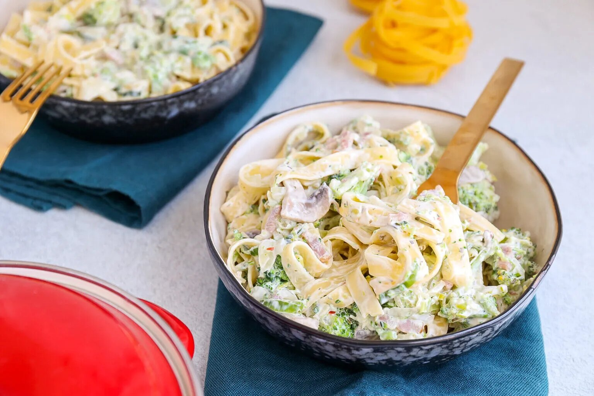

Pasta met broccoli en roomsaus
Pasta met broccoli en roomsaus
Pittige pasta met knoflook
Mac & cheese

Ingredienten
150 gr tagliatelle
300 gr broccoli(roosjes)
150 gr kastanje champignons
1 prei
1 ui
75 gr spekreepjes
200 gr kruidenroomkaas
2 el creme fraiche
1 tl Italiaanse kruiden
snuf peper
Bereiding